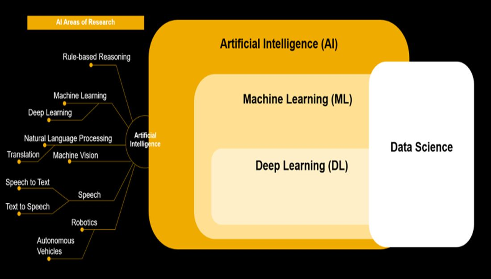
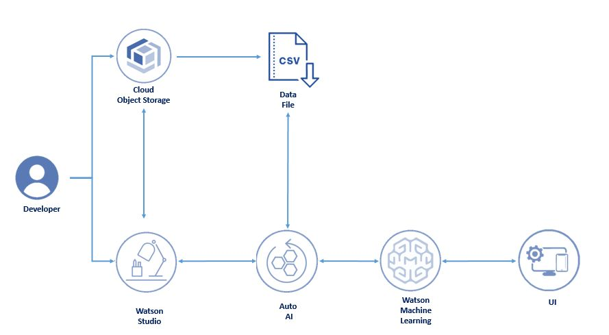
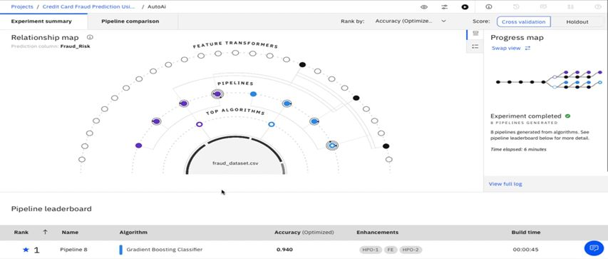

- I had course completion certificate on 'Machine Learning & Deep Learning'.
- I had done a project in 'Machine Learning'.
- About Course:
-
- Machine Learning (ML) is a branch of Artificial Intelligence (AI) that enables computers to “self-learn” from training data and improve over time, without being explicitly programmed.
- Machine Learning Algorithms are able to detect patterns in data and learn from them, in order to make their own predictions.
- Machine Learning, on the other hand, is an automated process that enables machines to solve problems with little or no human input, and take actions based on past observations.
- Basically for Machine Learning we use Jupyter Notebook to write a code.
- Image:
-

- About Project:
-
- The project i had done is "Risk prediction in corporate financial management using IBM Auto service".
- This project discusses building a system for creating predictions that can be used in different scenarios.
- It focuses on predicting fraudulent transactions, which can reduce monetary loss and risk mitigation by building a web application.
- Using ibm autoai, we automate all of the tasks involved in building predictive models for different requirements.
- You create a model from a data set that includes the gender, married, dependents, education, self-employed, applicant income, co-applicant income, loan amount, loan term, credit history, housing, and locality.
Services used:
- IBM Watson Studio
- IBM Watson Machine Learning
- Node-RED
- IBM Cloud Object Storage
- Image:
- 
- Output Image:
- 
|